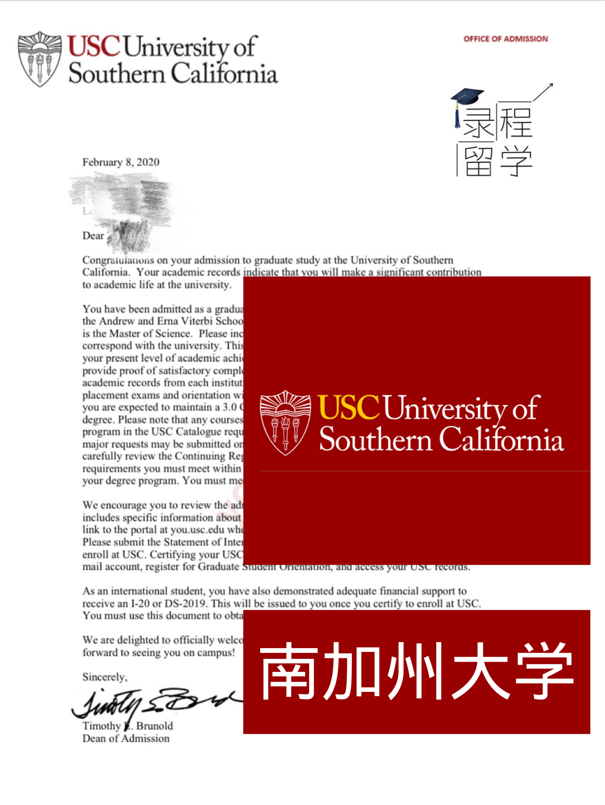

成功案例
韩同学（多伦多大学）
张同学（康奈尔大学研究生）
offer截图

哥伦比亚大学
Columbia University

康奈尔大学
Cornell University

麦吉尔大学
University McGill

加州大学 - 洛杉矶分校
UCLA
瓦萨学院
Vassar

纽约大学
NYU

英属哥伦比亚大学（商学院）
UBC

南加州大学
USC
科尔盖特大学
Colgate University
加州大学 - 圣地亚哥分校
UC San Diego

多伦多大学 （社会科学系）
University of Toronto
华盛顿大学
University of Washington

巴布森学院
Babson
布兰迪斯大学
Brandeis University
波士顿大学
Boston University
史密斯学院
Smith College
西门菲莎大学 （科学学院）
SFU
加州大学 - 圣巴巴拉分校
UCSB